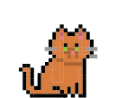
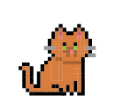

DashPets
Transforms data into a cute cat, a happy dog or cool t-rex in your dashboard. Filter, interact, and have fun!
Get Started
- Add any category to 'Pets' to generate pets.
- Add a measure to 'Size' to give the pets a size (optional).
- Add a measure to 'Target' to give the pets a target (optional).
- If the target is not reached, the pets will become a hatchable egg.
 
